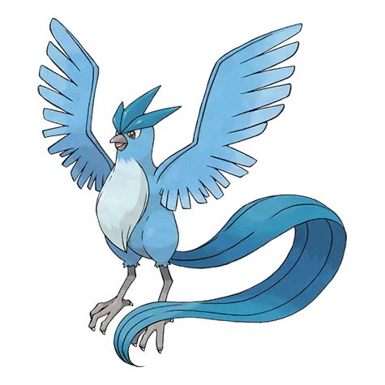
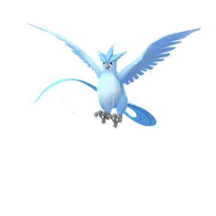

🧭 Quick Navigation
📖 Introduction
Articuno is one of the three Legendary birds from the Kanto region in Pokémon GO. Known for its majestic icy wings and powerful Blizzard attacks, Articuno has been a popular raid boss since Legendary raids were first introduced.
It is one of the easier Tier 5 raids, but trainers must take advantage of its double weakness to Rock-type moves to defeat it efficiently.
Although Articuno has strong Ice-type moves, it also has a significant weakness that makes it easier to defeat with the correct team. Because Articuno is both an Ice and Flying-type Pokémon, it takes extremely high damage from Rock-type attacks.
Using powerful Rock attackers such as Rampardos or Rhyperior can quickly reduce Articuno’s health and make the raid much easier. With proper preparation and the right counters, small groups of trainers can defeat this Legendary Pokémon without much difficulty.
Related guides: Mega Absol | Mega Aggron
💡 Expert Insight
Articuno is a bulky Ice and Flying-type Legendary raid boss that can sustain damage for longer durations compared to many other raids. While its attack is not the highest, its defensive stats can extend the battle if teams are not properly optimized.
Its double weakness to Rock-type moves is the most important factor in this raid. Rock-type attackers can deal significantly higher damage than any other type, making them the top priority for fast and efficient clears.
For consistent performance, trainers should focus on Rock-type Pokémon with strong fast and charged moves, while also maintaining a balance between damage output and survivability. Weather boosts, especially Partly Cloudy conditions, can further enhance Rock-type effectiveness.
As a Legendary raid boss, Articuno typically requires multiple trainers, but well-prepared teams using optimal counters can complete the raid with fewer players by maximizing type advantages and coordination.
📊 Articuno Stats
| Type | Ice / Flying |
| Max CP | 3450 |
| Weather Boost | Windy, Snowy |
| Shiny | Yes |
| Base Attack | 192 |
| Base Defence | 236 |
| Base Stamina | 207 |
Articuno has very strong defense, but its weaknesses make it easier to defeat with the right Pokémon.
🎯 Catch CP & 100% IV
After defeating Articuno, you will encounter it for capture.
CP Range:
- No Weather Boost: 1,665-1,743 CP
- Weather Boost: 2,082-2,179 CP
100% IV:
- 1743 (Normal)
- 2179 (Weather Boosted)
Use:
- Golden Razz Berry
- Curveball Excellent Throws
Keep in mind that weather-boosted Articuno is significantly harder to defeat, so always prepare strong Rock, Electric, Fire, or Steel-type counters.
⚠️ Articuno Weaknesses
Articuno has one extreme weakness and several normal weaknesses.Rock-type Pokémon deal massive damage because of the double weakness.
| Category | Details |
|---|---|
| ❌ Weak to |
 Rock • Rock •
 Steel • Steel •
 Fire • Fire •
 Electric Electric
|
| ✅ Resists to |
 Ground • Ground •
 Bug • Bug •
 Grass Grass
|
Notes:
These attack types deal reduced damage to Articuno.
Tip: Rock-type attackers are generally the best choice due to Articuno’s double weakness, but Fire, Steel, and Electric counters can help if you lack strong Rock attackers.
Articuno Weaknesses
Articuno is weak to Rock, Electric, Fire, and Steel-type moves. However, Rock-type attacks are the best choice because Articuno has a double weakness to Rock, taking significantly increased damage.
🗡️ Best Articuno Counters
To defeat Articuno quickly, prioritize Rock-type attackers with high DPS. Fire, Electric, and Steel types are also effective, but Rock types should be your primary focus due to the double weakness advantage.
🪨 Rock-Type Counters
Rock-type Pokémon are the best possible counters against Articuno. Because of the double weakness, even moderately strong Rock attackers can outperform high-level Fire or Electric types.
Strong Rock-type attackers with Rock Throw or Smack Down combined with Stone Edge or Rock Slide will melt Articuno’s HP bar quickly. If you have Mega Rock-type Pokémon available, using one can boost Rock damage for your entire raid group.
- Aerodactyl: (Rock Throw / Rock Slide)
- Excadrill: (Rock Slide)
Extremely high DPS
Very strong and bulky
🔥 Fire-Type Counters
Fire-type Pokémon deal super-effective damage to Articuno’s Ice typing. While not as strong as Rock types, Fire attackers are still solid alternatives, especially if you lack strong Rock counters. Sunny weather boosts Fire-type moves, improving their performance.
- Blaziken: (Fire Spin / Blast Burn)
- Blacephalon: (Incinerate / Mind Blown)
Huge Fire DPS
Legendary-level attack
⚡Electric-Type Counters
Electric-type Pokémon exploit Articuno’s Flying typing. They are consistent damage dealers and typically have strong survivability. In Rainy weather, Electric attacks receive a boost, making them even more effective.
- Zekrom: (Charge Beam / Fusion Bolt)
- Xurkitree: (Thunder Shock / Discharge)
Huge Electric DPS
Legendary-level Electric attack
⚙️ Steel-Type Counters
Steel-type Pokémon are resistant to Ice-type moves and can deal super-effective damage. They tend to be bulkier, which allows them to survive longer during raids, making them reliable picks in smaller groups.
- Zacian: (Metal Claw / Behemoth Blade)
Good defensive counters
🏆 Best Regular Counters
Regular Pokémon that amplify the right types give you a powerful edge. Below are top Regular counters with short notes on why they excel.
| Pokémon | 🗡️ Fast Moves | 💥 Charged Moves | 🔄 Elite Moves | 🏆 Best Moves | 🧪 Why This Counter Works |
|---|---|---|---|---|---|
| Zacian | Metal Claw / Air Slash | Play Rough / Close Combat / Giga Impact / Behemoth Blade | None | Air Slash and Giga Impact / Behemoth Blade | Steel typing resists Ice-type attacks while Behemoth Blade provides neutral damage, making it a safe but not top-tier option. |
| Rampardos | Smack Down / Zen Headbutt | Rock Slide / Flamethrower / Outrage | None | Smack Down and Rock Slide | Smack Down and Rock Slide exploit Articuno’s double weakness to Rock, delivering extremely high DPS. |
| Dusk Mane Necrozma | Shadow Claw / Psycho Cut / Metal Claw | Dark Pulse / Iron Head / Future Sight / Outrage / Sunsteel Strike | None | Shadow Claw / Metal Claw and Sunsteel Strike | Steel typing resists Ice moves and Sunsteel Strike deals consistent super-effective damage. |
| Zamazenta | Metal Claw / Ice Fang | Giga Impact / Moonblast / Close Combat / Behemoth Bash | None | Ice Fang and Giga Impact | Provides decent neutral coverage but lacks strong Rock-type damage, making it a secondary option. |
| Rhyperior | Mud Slap / Smack Down | Skull Bash / Superpower / Earthquake / Stone Edge / Surf / Breaking Swipe | Rock Wrecker | Smack Down and Rock Wrecker | Smack Down and Rock Wrecker take advantage of Articuno’s double Rock weakness while offering strong bulk. |
| Terrakion | Double Kick / Smack Down / Zen Headbutt | Close Combat / Earthquake / Rock Slide | Sacred Sword | Smack Down and Earthquake | Smack Down and Rock Slide provide powerful Rock-type damage with good overall raid performance. |
| Gigalith | Mud Slap / Smack Down | Superpower / Rock Slide / Heavy Slam / Solar Beam | Meteor Beam | Mud Slap and Solar Beam | Strong Rock attacker that capitalizes on the 256% Rock damage multiplier. |
| Tyranitar | Iron Tail / Dragon Breath / Bite | Stone Edge / Fire Blast / Crunch / Brutal Swing | Smack Down | Smack Down and Stone Edge | Smack Down and Stone Edge exploit the double Rock weakness while Tyranitar’s bulk improves survivability. |
| Tyrantrum | Rock Throw / Dragon Tail / Charm | Earthquake / Stone Edge / Meteor Beam / Rock Tomb / Outrage / Crunch | None | Charm and Earthquake or Meteor Beam | Rock Throw and Meteor Beam deal super-effective Rock damage and maintain solid DPS output. |
| Blacephalon | Astonish / Incinerate | Mystical Fire / Shadow Ball / Overheat | None | Incinerate and Overheat | Fire typing hits Articuno’s Ice weakness and performs well in Sunny weather. |
👤 Best Shadow Counters
Shadow Pokémon that amplify the right types give you a powerful edge. Below are top Shadow counters with short notes on why they excel.
| Pokémon | 🗡️ Fast Moves | 💥 Charged Moves | 🔄 Elite Moves | 🏆 Best Moves | 🧪 Why This Counter Works |
|---|---|---|---|---|---|
| Shadow Darmanitan | Tackle / Fire Fang / Incinerate | Focus Blast / Rock Slide / Overheat / Psychic | None | Incinerate and Overheat | Shadow boost plus Fire-type attacks deal heavy super-effective damage to Articuno’s Ice typing. |
| Shadow Aerodactyl | Rock Throw / Steel Wing / Dragon Breath / Bite | Hyper Beam / Earth Power / Ancient Power / Rock Slide / Iron Head | None | Steel Wing and Hyper Beam | Shadow Rock damage benefits from Articuno’s double weakness, delivering extremely high DPS. |
| Shadow Metagross | Fury Cutter / Bullet Punch / Zen Headbutt | Earthquake / Flash Cannon / Psychic | Shadow Claw / Meteor Mash | Zen Headbutt and Earthquake | Steel typing resists Ice and Meteor Mash delivers strong super-effective damage. |
| Shadow Excadrill | Mud Slap / Mud Shot / Metal Claw | Earthquake / Drill Run / Scorching Sands / Rock Slide / Iron Head | None | Mud Slap and Earthquake | Access to Rock Slide allows it to exploit the double Rock weakness effectively. |
| Shadow Alolan Golem | Rock Throw / Volt Switch | Stone Edge / Rock Blast / Wild Charge | Rollout | Rollout and Stone Edge | Rock typing combined with Shadow boost maximizes damage against Articuno’s weakness. |
| Shadow Crustle | Smack Down / Fury Cutter | Rock Blast / Rock Slide / Rock Wrecker / X-Scissor | None | Smack Down and Rock Wrecker | Smack Down and Rock Slide hit the double weakness while Shadow boost increases DPS. |
| Shadow Aurorus | Rock Throw / Frost Breath / Powder Snow | Hyper Beam / Ancient Power / Meteor Beam / Thunderbolt / Weather Ball / Blizzard | None | Rock Throw and Hyper Beam | Rock-type fast moves exploit the double weakness while Shadow boost increases overall damage. |
| Shadow Omastar | Mud Shot / Water Gun | Ancient Power / Rock Blast / Hydro Pump | Rock Throw / Rock Slide | Rock Throw and Hydro Pump | Rock moves deal super-effective damage and Shadow bonus increases pressure. |
| Shadow Tyrantrum | Rock Throw / Dragon Tail / Charm | Earthquake / Stone Edge / Meteor Beam / Rock Tomb / Outrage / Crunch | None | Charm and Earthquake or Meteor Beam | Rock Throw and Meteor Beam hit the 256% Rock multiplier with boosted Shadow attack. |
| Shadow Aggron | Smack Down / Iron Tail / Metal Sound / Dragon Tail | Stone Edge / Rock Tomb / Meteor Beam / Heavy Slam / Thunder | None | Iron Tail / Dragon Tail and Meteor Beam | Rock moves exploit the double weakness while Steel typing reduces Ice damage taken. |
| Shadow Gigalith | Mud Slap / Smack Down | Superpower / Rock Slide / Heavy Slam / Solar Beam | Meteor Beam | Mud Slap and Solar Beam | Strong Rock-type damage amplified by Shadow attack bonus. |
| Shadow Rampardos | Smack Down / Zen Headbutt | Rock Slide / Flamethrower / Outrage | None | Smack Down and Outrage | One of the highest DPS Rock attackers in the game due to double weakness plus Shadow boost. |
| Shadow Rhyperior | Mud Slap / Smack Down | Skull Bash / Superpower / Earthquake / Stone Edge / Surf / Breaking Swipe | Rock Wrecker | Mud Slap and Earthquake | Rock Wrecker benefits from double weakness and Shadow attack bonus for massive damage. |
| Shadow Tyranitar | Iron Tail / Dragon Breath / Bite | Stone Edge / Fire Blast / Crunch / Brutal Swing | Smack Down | Iron Tail and Fire Blast | Smack Down and Stone Edge combined with Shadow boost make it a top-tier Rock attacker. |
Raid Difficulty
Articuno is considered one of the easier Legendary raids in Pokémon GO. It can be defeated by 3–4 experienced trainers using strong Rock-type counters.
Strategy Guide
Focus on Rock-type attackers to maximize damage due to Articuno’s double weakness. Pokémon like Rampardos, Rhyperior, and Tyranitar are excellent choices. Avoid using Dragon, Grass, and Ground-type Pokémon, as they are vulnerable to Articuno’s Ice-type attacks.
⚡ Best Mega Counters
Mega Pokémon that amplify the right types give you a powerful edge. Below are top Mega counters with short notes on why they excel.
| Pokémon | 🗡️ Fast Moves | 💥 Charged Moves | 🔄 Elite Moves | 🏆 Best Moves | 🧪 Why This Counter Works |
|---|---|---|---|---|---|
| Mega Tyranitar | Iron Tail / Dragon Breath / Bite | Stone Edge / Fire Blast / Crunch / Brutal Swing | Smack Down | Iron Tail and Fire Blast | Provides Rock-type team boost while exploiting the double Rock weakness with strong bulk. |
| Mega Diancie | Tackle / Rock Throw | Rock Slide / Power Gem / Moonblast | None | Rock Throw and Moonblast | One of the strongest Rock attackers and boosts Rock-type damage for the entire team. |
| Mega Aerodactyl | Rock Throw / Steel Wing / Bite / Dragon Breath | Earth Power / Hyper Beam / Ancient Power / Rock Slide / Iron Head | None | Steel Wing and Hyper Beam | Boosts Rock-type moves for allies and deals fast super-effective Rock damage. |
| Mega Aggron | Smack Down / Iron Tail / Dragon Tail | Stone Edge / Rock Tomb / Meteor Beam / Heavy Slam / Thunder | None | Iron Tail / Dragon Tail and Meteor Beam | Steel typing resists Ice while Rock moves hit the double weakness. |
| Mega Blaziken | Counter / Fire Spin / Ember | Focus Blast / Brave Bird / Overheat / Blaze Kick / Aura Sphere | Stone Edge / Blast Burn | Counter / Fire Spin and Overheat | Fire typing hits Articuno’s Ice weakness and provides team Fire boost in Sunny weather. |
| Mega Charizard Y | Air Slash / Fire Spin | Fire Blast / Overheat / Dragon Claw / Air Cutter | Wing Attack / Ember / Dragon Breath / Blast Burn / Flamethrower | Fire Spin and Overheat | Strong Fire DPS that exploits Ice weakness and boosts Fire damage for the team. |
💊 Revive & Potion Cost
- Average revives used: 8–14
- Average potions used: 10–18
❌ Common Raid Mistakes
- Not bringing a Mega Pokémon for team boosts
- Using weather-boosted Pokémon of the wrong type
- Relobbying too late and losing damage time
- Ignoring dodging during hard-hitting moves
🧩 Best Team Compositions
A balanced team might look like this:
- Lead with strongest Rock attacker
- Follow with two additional Rock Pokémon
- Include one Electric or Fire attacker as backup
- Finish with another Rock-type for maximum DPS
Avoid using Grass, Bug, or Ground types, as Articuno resists them. Using resisted types significantly increases raid time.
Best Team (3–5 Trainers)
Rock-type Pokémon are the fastest option because of the double weakness:
- Mega Diancie — primary Rock DPS
- Shadow Rampardos — top Rock attacker (Smack Down + Rock Slide)
- Shadow Rhyperior — bulky Rock counter (Smack Down + Rock Wrecker)
- Mega Tyranitar — Rock power + versatility (Smack Down + Stone Edge)
- Terrakion — balanced Rock damage (Smack Down + Rock Slide)
Alternate / Backup Options
- Heatran — Fire DPS support
- Electivire — Electric coverage
- Raikou — Electric fast attacker
- Mega Blaziken — Fire DPS and Mega boost (Fire Spin + Blast Burn)
Even if you don’t have perfect Rock counters, mixing Fire, Electric, and Steel attackers fills in coverage while still exploiting weaknesses.
Difficulty
Articuno does not have the extreme bulk of bosses like Lugia or Giratina. With proper Rock-type teams, this raid usually ends very quickly. The main danger is not the timer, but losing fragile attackers too fast if Articuno is using powerful Ice-type moves.
👥 Raid Difficulty & Trainers Needed
Recommended Group Size
Articuno is easier than many Legendary raid bosses due to its double weakness. Here is a general difficulty estimate:
- 2 Trainers: Possible with strong Rock counters
- 3 Trainers: Comfortable clear
- 4–5 Trainers: Very easy
- 6+ Trainers: Guaranteed win
High-level trainers with optimized Rock teams can duo Articuno, especially in Partly Cloudy weather.
🧠 Raid Strategy & Advanced Tips
1. Focus on Rock Damage
Because Articuno has a double weakness to Rock-type attacks, your goal should be to maximize Rock damage output. Even if your Rock Pokémon are slightly under-leveled, they will often outperform stronger non-Rock attackers.
2. Pay Attention to Moveset
Articuno can use Ice-type and Flying-type charged moves. If it has Blizzard, your Fire and Dragon attackers may faint faster. If it has Hurricane, Electric and Rock types are generally safer. Adjust your dodging strategy depending on the charged move.
3. Use Mega Pokémon Wisely
Mega Evolution can significantly increase raid efficiency. A Mega Rock-type Pokémon boosts Rock damage for all trainers in the lobby. Coordinate with teammates so that at least one Mega Rock attacker is active during the battle.
Articuno’s dual Ice and Flying typing gives it several important weaknesses — notably to Rock, Electric, Fire, and Steel-type moves. Trainers should prioritize counters that not only hit these weaknesses but also resist Articuno’s powerful charged Ice-type attacks. Pokémon like Rampardos with Smack Down + Rock Slide, Magnezone with Spark + Wild Charge, and Heatran with Fire Spin + Flamethrower are excellent choices because they combine high damage output with effective typing against Articuno.
Weather conditions play a meaningful role in this encounter. In Sunny or Clear weather, Fire-type moves receive a weather boost, making Fire counters especially effective. During Windy weather, Flying-type moves are boosted, which indirectly helps Rock-type counters by softening Articuno’s aerial attacks. Trainers should always check the weather before battling, as picking counters that receive weather bonuses can dramatically increase your damage per second (DPS).
Dodging charged attacks like Ice Beam and Blizzard can help your counters survive longer, especially in smaller raid groups where every HP counts. While it’s not always necessary to dodge every attack — particularly in larger groups — avoiding the most powerful charges gives your team more time to deal damage. Prioritize dodging when your team’s health is low or when weather boosts make Articuno’s moves hit harder.
For optimal results, lead with your strongest DPS counters that exploit Articuno’s weaknesses. Once those Pokémon begin fainting, follow up with secondary attackers that still deal super-effective damage but have greater bulk. In larger groups, coordinating counter roles — for example, assigning Rock-type attackers first and following with Electric or Fire types — can improve your team’s overall effectiveness and help finish the raid cleanly and quickly.
🌦️ Weather Boost Effects
Weather conditions can strongly influence your raid performance:
🌧️ Rainy Weather
- Boosts Electric-type moves.
🌬️ Windy Weather
- Boosts Articuno’s Flying-type moves
⛅ Partly Cloudy Weather
- Boosts Rock-type counters.
🌨️ Snowy Weather
- Boosts Articuno’s Ice-type moves
☀️ Sunny Weather
- Boosts Fire-type counters.
Partly Cloudy weather is ideal because it boosts Rock attacks, making raids significantly faster. Avoid Snow or Windy weather if possible, as these conditions strengthen Articuno’s own attacks.
🌀 Articuno Moveset
🗡️ Fast Moves
- Frost Breath
- Ice Shard
💥 Charged Moves
- Ancient Power
- Ice Beam
- Icy Wind
- Triple Axel
- Blizzard
🔄 Elite Moves
- Hurricane
Move Notes: Blizzard is Articuno’s strongest attack and can deal heavy damage to many counters.
⚔️ Is Articuno Good in PvP and PvE?
Raids (PvE)
Articuno is not one of the strongest raid attackers because there are better Ice-type Pokémon available. Examples include:
- Mamoswine
- Weavile
PvP
Articuno is excellent in PvP, especially in:
- Great League
- Ultra League
Its combination of bulk and debuff moves makes it a strong defensive Pokémon.
✨ Can Articuno Be Shiny in Pokémon GO?
Yes, trainers can encounter a Shiny Articuno after successfully defeating Articuno in a raid battle. When the raid is completed, players will receive an encounter with Articuno, and there is a chance that it may appear in its shiny form.
Shiny Articuno has a slightly darker blue color compared to the regular version, making it highly desirable for collectors and Pokémon GO enthusiasts.
The shiny odds in Legendary raids are typically higher than normal encounters, so participating in multiple raids increases the chance of obtaining a shiny Articuno.
🚶 Buddy Distance
20 km (per Pokémon GO buddy distance)
⚖️ Shadow & Mega Comparison
🧬 Best Mega Evolutions
Recommended Megas to use against Articuno:
- Tyranitar, Diancie, Aerodactyl, Aggron – 🪨 Rock boost
- Blaziken, Charizard Y – 🔥 Fire boost
📌 Is Articuno Worth Raiding?
Yes, for several reasons:
- Chance to catch Shiny Articuno
- Strong PvP Pokémon
- Easy legendary raid due to Rock weakness
However, it is not a top raid attacker compared to other Ice types.
🎁 Raid Rewards
Defeating Articuno in a 5-Star raid battle rewards trainers with valuable items that help power up Pokémon and prepare for future raids. The exact rewards may vary depending on raid performance, gym control, and friendship bonuses.
| Reward | Typical Amount |
|---|---|
| Golden Razz Berry | 3 – 12 |
| Rare Candy | 3 – 9 |
| Revive | 6 – 15 |
| Hyper Potion | 6 – 15 |
| Fast TM | 0 – 2 |
| Charged TM | 0 – 2 |
| Stardust | 1000 |
Premier Balls
After defeating Articuno, trainers receive Premier Balls to catch the raid boss. The number of Premier Balls typically ranges from 8 to 16 depending on several factors:
- Damage contribution during the raid
- Gym control by your team
- Friendship bonus with raid participants
- Speed of defeating the raid boss
Pro Tips
- Rock-type moves deal the highest damage due to double weakness.
- Weather boost (Partly Cloudy) increases Rock-type damage.
- Use Mega Aerodactyl or Mega Tyranitar to boost team damage.
🖼️ Regular vs Shiny Articuno Forms
Shiny Absol has a distinctive red coloration instead of the standard white appearance, making it one of the most recognizable shiny Pokémon in the game.

Articuno
Images are used for informational and educational purposes only. All rights belong to their respective owners.

Shiny Articuno
Images are used for informational and educational purposes only. All rights belong to their respective owners.
❓ FAQ
Can Articuno be shiny in Pokémon GO?
Yes, shiny Articuno is available! Its shiny form has a slightly lighter blue body.
What is the best moveset of Articuno?
The best moveset includes Frost Breath (Fast Move) and Blizzard (Charged Move).
How many trainers are needed to defeat Articuno?
2–4 strong trainers can efficiently defeat Articuno using proper counters. Larger groups make the raid safer for less experienced players.
Is Articuno a difficult raid boss?
Articuno has moderate bulk and attack. Proper type advantage and dodging charged moves make this raid manageable.
🏁 Conclusion
Articuno raids are straightforward when you prepare correctly. The key is maximizing Rock-type damage to exploit its double weakness. Use weather boosts to your advantage, coordinate Mega Evolutions, and avoid resisted types. With proper counters, even small groups can defeat Articuno efficiently.
Prepare your Rock team, watch the weather, and enjoy adding this Legendary Ice/Flying Pokémon to your collection.
⚡Quick picks
- Best Mega Team: Tyranitar, Diancie
- Best Shadow Team: Rampardos, Rhyperior, Gigalith
- Best Regular Team: Zacian